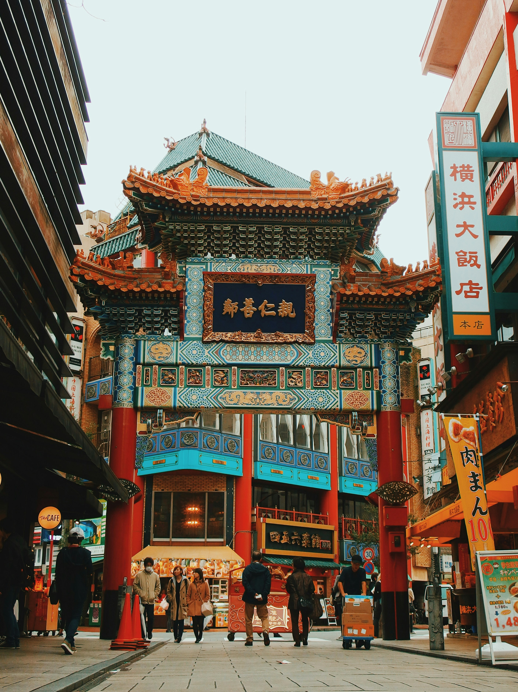

Galerie



Luxury travel experiences crafted for dreamers.
Contact UsI-Travel Planner est spécialisé dans les voyages organisés, les voyages sur mesure et les circuits Madagascar. Nous créons des expériences uniques pour les voyageurs en quête d’évasion, d’aventure et de découvertes authentiques.
Escapades internationales premium.
Safari, plages paradisiaques et expériences inoubliables.
Culture, modernité et immersion asiatique.
Découvrez les trésors naturels, culturels et les paysages uniques de Madagascar.

📞 038 40 860 70
💬 WhatsApp : 037 68 637 80
📧 itravelplanner.mg@gmail.com
📍 Immeuble SITRAM Ankorondrano